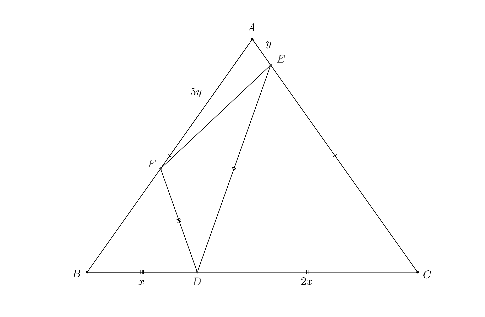

The final round of the South African Mathematics Olympiad will be taking place on Thursday, 28 July 2019. In the week and half leading up the the contest, I plan to take a look at some of the problems from the senior paper in 2018, and have already written about the first problem
The second problem from the 2018 South African Mathematics Olympiad was
In triangle $latex ABC$, $latex AB = AC$, and $latex D$ is on $latex BC$. A point $latex E$ is chosen on $latex AC$, and a point $latex F$ is chosen on $latex AB$, such that $latex DE = DC$ and $latex DF = DB$. It is given that $latex \frac{DC}{BD} = 2$ and $latex \frac{AF}{AE} = 5$. Determine the value of $latex \frac{AB}{BC}$.
The first step of solving any geometry problem should always be to draw a sketch. This helps you to understand how different parts of the figure relate to each other, and an accurate sketch may help you to form conjectures. Sometimes having a deliberately inaccurate sketch on hand is also helpful as it may help to avoid circular reasoning. For example, if three points in a sketch appear to be collinear, and you are trying to prove that this is in fact the case, then when working with an accurate sketch you may inadvertently assume that the points are collinear in your proof.
Below I have included a sketch which is more accurate than it needs to be because when I was creating it, I already knew what all of the lengths in the problem work out to be.
To relate $latex AB$ to $latex BC$, it may help to relate these lengths to other lengths which we are given information about. For example, we know that $latex BC = 3 BD$, so if we could also relate $latex AB$ to $latex BD$, then we would be able to relate $latex AB$ to $latex BC$.
The key insight that allows us to relate $latex AB$ to $latex BD$ is to realise that the triangles $latex ABC$ and $latex DBF$ are similar. This is because triangle $latex DBF$ is isosceles, and so we have that $latex \angle BFD = \angle DBF = \angle ACB$, and so the two triangles have two pairs of corresponding angles equal. We are thus able to conclude that $latex \frac{AB}{BC} = \frac{BD}{BF}$.
We don't appear to be any closer to solving the problem, since we now have to figure out how $latex BF$ relates to $latex BD$, and this appears to be at least as difficult as the original problem. We do, however, know that $latex BF = AB - AF$, which we can use to our advantage because we have been given information about how $latex AF$ relates to other lengths in the figure. Specifically, we know the ratio of $latex AF$ to $latex AE$, and so it would be helpful to work with the length $latex AE$ in order to make further progress.
We were earlier able to relate the ratio $latex \frac{AB}{BC}$ to the length $latex AF$ by noting that triangles $latex ABC$ and $latex DBF$ are similar. We could do the same thing with triangles $latex ABC$ and $latex DCE$ to relate the ratio $latex \frac{AB}{AC}$ to the length $latex AE$ instead. Since we know the relationship between $latex AF$ and $latex AE$, we would then be able to set up an equation for $latex \frac{AB}{AC}$.
Using this approach, we obtain
$latex \displaystyle \frac{2BD}{AC - AE} = \frac{DC}{CE} = \frac{AB}{BC} = \frac{BD}{BF} = \frac{BD}{AB - AF}.$
From this we obtain that
$latex \displaystyle 2AC - 10AE = 2(AB - AF) = AC - AE$
and so we now know that $latex AC = 9AE$. This is not quite what we wanted. We hoped that the equation would allow us to determine $latex \frac{AB}{BC}$, but we have still obtained some valuable information.
This unexpected piece of information is in fact enough to finish off the problem. We return to the relation
$latex \displaystyle \frac{AB}{BC} = \frac{2BD}{AC - AE}$.
Since we know know what $latex AC - AE$ is as a fraction of $latex AC$, and we know what proportion of $latex BC$ the length $latex BD$ is equal to, we can rewrite
$latex \displaystyle \frac{2BD}{AC - AE}$
in terms of $latex AB$ and $latex BC$, and thus obtain an equation for $latex AB$ and $latex BC$ after all. Doing so gives us
$latex \displaystyle \frac{AB}{BC} = \frac{\frac{2}{3} BC}{\frac{8}{9} AC}$
and so we obtain that
$latex \displaystyle {\left(\frac{AB}{BC}\right)}^2 = \frac{3}{4}$
which finally allows us to determine that
$latex \displaystyle \frac{AB}{BC} = \frac{\sqrt{3}}{2}.$